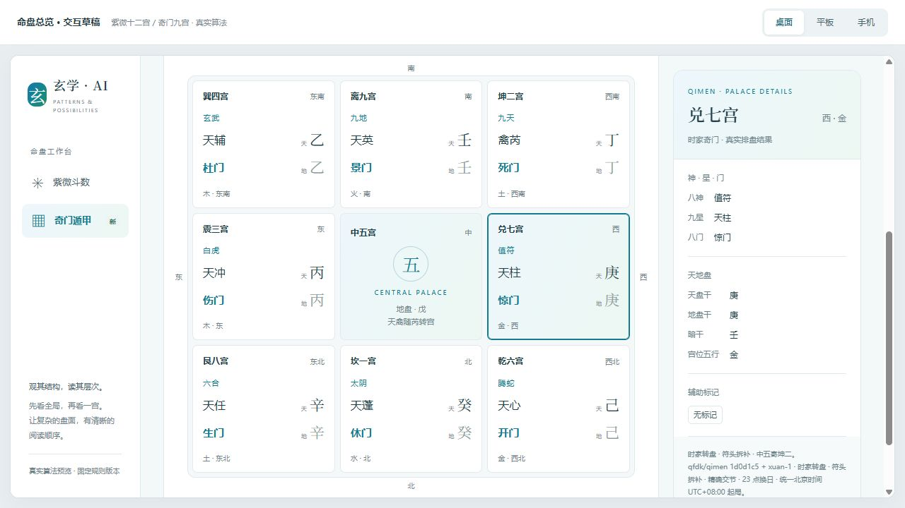

算法审计 · 2026-10-12 · 本地源码与真实算法计算紫微边界修正，奇门真实排盘接入
148 / 148 自动测试通过；TypeScript 类型检查及 H5 生产构建通过。奇门的 1,440 个真实计算样本覆盖阴阳十八局。结论限于明确规则下的排盘一致性，不能等同于全流派、全日期的准确率，也不证明命理预测有效。
正式紫微页面 · 真实计算预览 · 完整样本与修复前后 JSON · 测试日志
紫微发现与修复
| 重点 | 原问题 | 处理 |
|---|
| 晚子时 | iztro 2.5.7 的 timeIndex=12 推进部分日星，但跨月、年、闰月分界时没有完整推进排盘历日。 | 先将出生地 23:00—23:59 转为次日子时再排盘。原始出生时间和计算历日分开保存与展示。 |
| 闰月 | 旧农历选择器会把负月数表示的闰月限制为普通月份。 | 紫微输入明确区分普通月 / 闰月，拒绝不存在的闰月和日期。规则固定：初一至十五按本月，十六日起按下月。 |
| 时区 | 依赖设备本地 Date，换设备可能改变出生钟点。 | 保存 IANA 出生时区；计算、编辑、历史、导出保留时区。DST 跳过的钟点拒绝，重复钟点要求选较早或较晚的一次。 |
版本：ziwei-civil-v1、iztro 2.5.7、lunar-javascript 1.7.7。采用出生地民用钟表时间，包含历史夏令时，不减掉夏令时再排盘、不校正真太阳时；正月初一换年，支持出生年份 1900—2099。旧记录缺时区时标记 legacy-device，按当前设备解释并提示确认，无法凭旧记录还原出生地。
实测复现：上海 2023-04-05 23:00（闰二月十五），原命宫卯、水二局；修复后命宫辰、土五局，与 2023-04-06 00:00 十二宫全部一致。另覆盖闰月十六、闰月结束、春节前夜、普通月末，共五组跨日晚子时。
其他断言：22:59 / 23:00 / 00:59 / 01:00；六个农历日期锚点；初一水二局十四主星与癸年四化手算；UTC、上海、纽约三个宿主时区输出相同；纽约 DST 跳时 / 重复时；上海 1991 年夏令时。运限时间轴仍按用户所选民用日期解释，防止海外出生时区让时间轴日期偏移。
奇门来源与规则
采用 qfdk/qimen 固定提交（项目始于 2017 年）。JavaScript 核心可直接复用，已有上游测试。保留原 MIT LICENSE；上游 package.json 写 ISC，与实际 LICENSE 不一致，来源记录已注明。项目年限和自测不足以证明完全准确。
时家转盘 · 符头拆补 · 精确交节 · 23 点换日 · 中五寄坤二、天禽随芮。输入按其时区转换为瞬间，再用固定 UTC+08:00 北京钟表时间起局。README 写“茅山”、测试注释写“置闰”，但实际是符头定三元加节气查表，本项目名称按实现确定。
本地补丁 xuan-1：接收显式历法日期，摆脱宿主 Date；节气按实际时刻而非整日切换；四柱、符头、日旬统一 23 点换日，年 / 月柱按精确交节；旬首在中五时先从原五宫数值使，再寄坤二。算法自动吉凶断语未接入界面。
来源与补丁记录 · 原始哈希 · 接入哈希
依据与证据强度
| 依据 | 验证内容及限度 |
|---|
| 香港天文台 2023 公农历表 | 普通二月、闰二月起止、十五 / 十六日期。天文台确认历法日期，不确认安星规则。 |
| 安星诀 / iztro 配置规则 | 按公开规则手推命身宫、十四主星、四化，用固定字面值断言；与调用同库重复计算的回归检查分开。 |
| 香港天文台 2026 年历 | 香港时间芒种 6 月 5 日 23:48，夏至 6 月 21 日 16:25；独立断言前后一分钟。秒级交节取自 lunar-javascript，只检验切换逻辑，并非独立秒级天文精度认证。 |
| 奇门手算盘 | 2026-06-05 16:52 尚在小满，上元阳五局；丙午 / 癸巳 / 庚戌 / 甲申。地盘 1癸 2丁 3丙 4乙 5戊 6己 7庚 8辛 9壬；甲申庚在兑七，天柱值符、惊门值使，天盘地盘伏吟。上游 fixture 预期阳六，因整天提前当芒种，未沿用错误基准。 |
| 批量与原版基线 | 原版两组核心测试 26 项通过，仅作基线。修正后 1,440 个真实盘覆盖十八局，检查干、门、神排列与值符值使约束；它们是结构断言，不是 1,440 张独立人工金标准。 |
页面实测与交付边界
正式 Vue 页面已实际操作：闰二月十五 23:00 输入、公历对应、生成土五局命宫辰、修改后恢复原始时间和时区；闰三月无效输入提示。手机 390px 日期弹窗无横向溢出。预览已验证：晚子和次日十二宫一致、夏至前后阳转阴、纽约 DST 报错、九宫点选详情、手机和平板布局。
紫微保存 / 历史 / 导出元数据往返有自动测试；4174 的账号及 API 是隔离模拟服务，排盘计算使用真实引擎。未验证生产数据库、真实 AI 模型或原生 App / 小程序。奇门已接入可复用模块和 HTML 九宫预览，尚未新增正式账号、历史及 AI 业务页面。
类型检查（退出码 0） · H5 构建（退出码 0，含现有分包告警） · 上游核心基线 · 样本生成脚本
复现：frontend-docker 中运行 node --test tests/*.test.cjs、node node_modules/vue-tsc/bin/vue-tsc.js --noEmit；设 VITE_BUILD_PROGRESS=false 后执行 H5 build。根目录运行 node docs/chart-overview-draft/build.cjs、node docs/algorithm-audit/generate-evidence.cjs。未安装新包或修改共享 node_modules。

手机时间输入截图 · 正式紫微结果截图